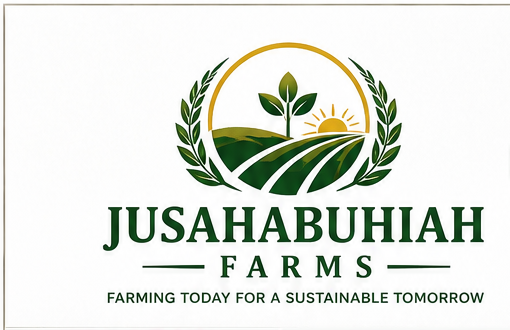
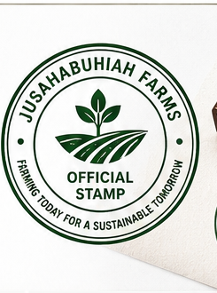
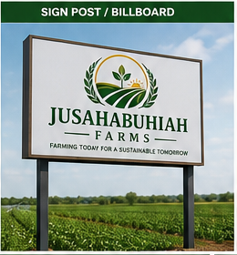
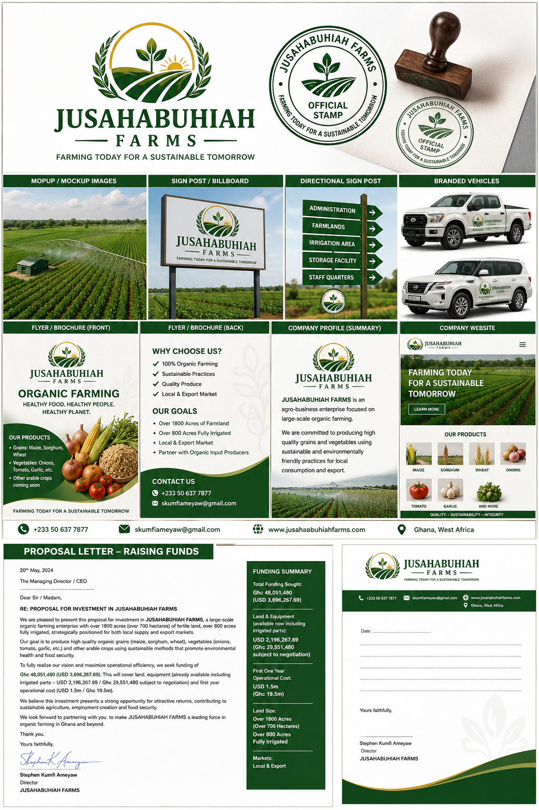
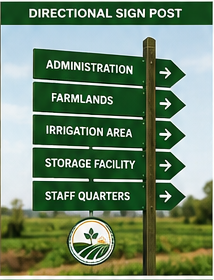
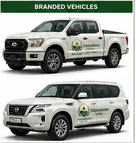

Vision
To become one of Africa's leading organic farming and food production companies through innovation, sustainability, and export-driven agriculture.

Organic Agriculture & Agribusiness
Growing organic food for a sustainable future through large-scale irrigation, mechanized farming, climate-smart practices, and export-driven crop production in Ghana.

Company Official StampAbout Us
Jusahabuhiah Farms is an emerging large-scale organic agricultural enterprise committed to transforming sustainable farming through modern irrigation systems, organic crop production, mechanized farming, and environmentally friendly agricultural practices.
The company is positioned to become a leading supplier of premium organic grains, vegetables, and arable crops for both local consumption and export markets.
To become one of Africa's leading organic farming and food production companies through innovation, sustainability, and export-driven agriculture.
To produce healthy organic food products using environmentally sustainable farming techniques while improving livelihoods, creating employment opportunities, and contributing to food security and economic growth.
Our Farms

Products & Services
Maize, sorghum, and wheat produced with sustainable organic farming practices.
Onions, tomatoes, and garlic grown for quality, freshness, and market readiness.
Other arable crops, agro-processing, organic seed production, and food export services.
Sustainability
Jusahabuhiah Farms promotes environmentally responsible organic agriculture, efficient water use, soil health, local job creation, and partnerships with global producers of organic fertilizers and pesticides.
Investors
Jusahabuhiah Farms is seeking strategic investors, agricultural development partners, organic farming partners, grant organizations, government support programs, agribusiness venture capitalists, and equipment leasing or financing partners.
Discuss PartnershipProposal Review
The full brand board below includes the logo direction, stamp, signposts, vehicle branding, flyer concepts, company profile, letterhead, and funding summary for investor review.

Why Invest
Gallery


Contact Us